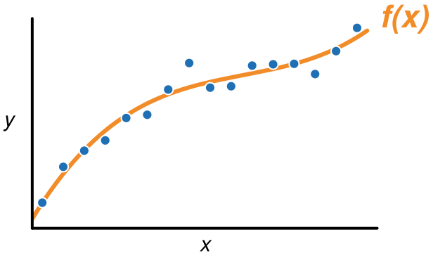
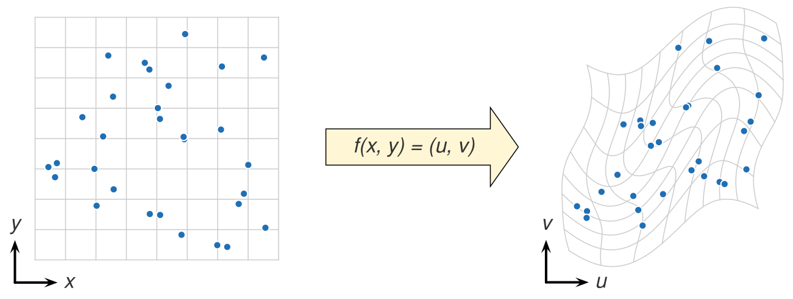
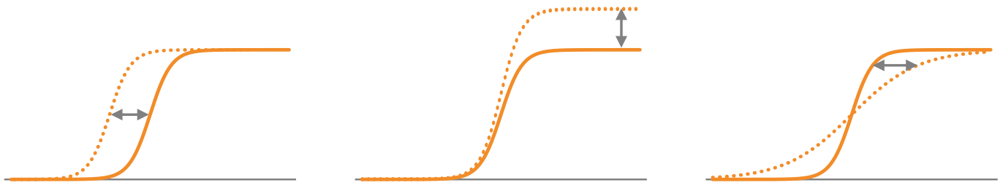
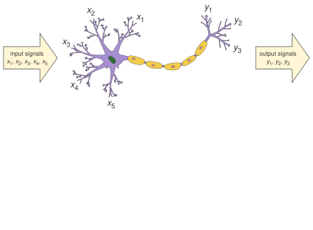
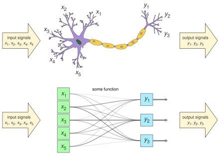
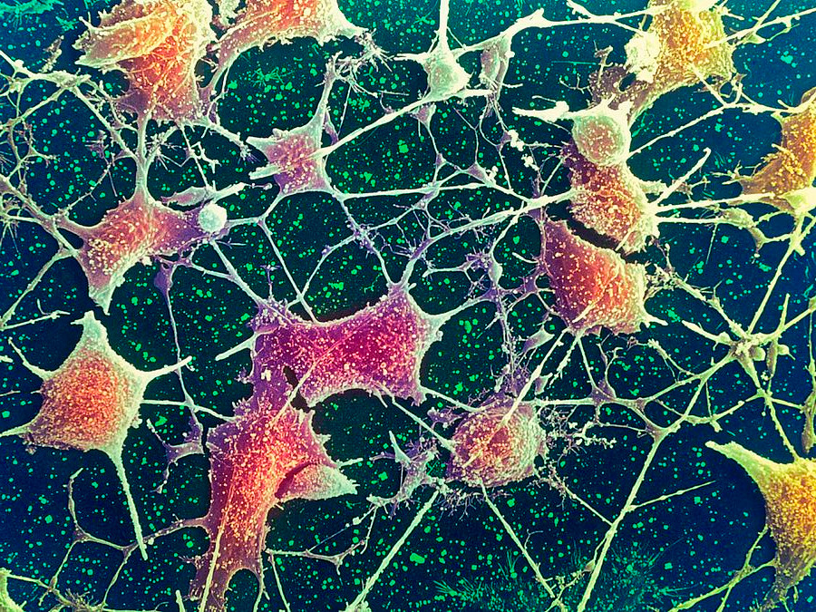
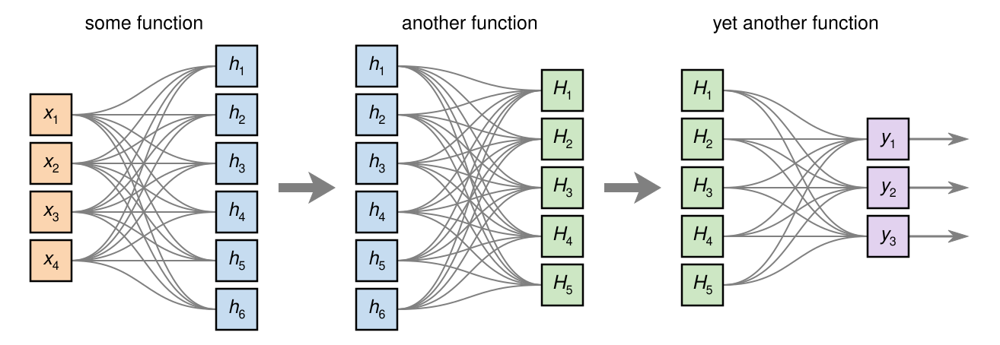
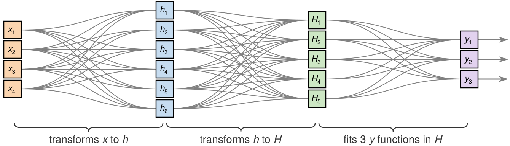

How Chatbots Work
Understanding AI through Interactive Demos
Jim Pivarski
University of Chicago, Data Science Institute
Computers are what our grandparents thought they’d be
When computers were first invented, the public thought of them as things you can talk to in natural language, like HAL in 2001.
After the widespread growth of personal computing and the Internet, we’ve come to think of them as a thing or a place: desktop, tool, game, cyberspace, platform, storefront, feed.
Now computers actually can hold a conversation, like HAL.
The purpose of this talk is to understand what happened, without anthropomorphizing.
Through-line for this talk
- Data can be represented as points in space.
- Models are smooth functions over space, fitted to match the training data.
- Space can be transformed to different coordinate systems, taking the data with it.
- A neural network is a model that discovers symmetric patterns in space.
- Meanings of words can be represented as points in space.
- Relationships between words can be encoded in an attention matrix.
- Natural language has syntax patterns that point to world-modeling.
- Training on large enough bodies of text yields problem-solving capabilities.
- Modern chatbots refine this capability and reshape it into Q&A format.
- Agents are conventional systems built around this problem-solving unit.
Through-line for this talk
- How to find hidden geometric patterns in spatial data.
- How to turn linguistic meaning into geometry and find its patterns.
- How to build systems that talk, using linguistic patterns from millions of humans.
How to find hidden geometric
patterns in spatial data.
Data as points in space
When we measure something, we can express it as a number, even if it’s just 0 or 1.
We usually measure a few attributes together, such as temperature and pressure of seawater.
Those two numbers can be drawn in a scatter-plot as a 2-dimensional point on paper.
Add a salinity measurement, and it’s a 3-dimensional point in space.
Add longitude, latitude, and other attributes and the space will have many more dimensions.
Models as best-fit functions
Data points only tell us facts at discrete points: exactly where and when they were measured.
Seawater has a temperature even when it isn’t being measured.
To make educated guesses about unmeasured points, we fit a function to the data, which fills in the gaps between points and extrapolates beyond them.

A function f is some algorithm (a formula or a computer program) that predicts a single number f(x) for every number x.
Functions also transform coordinates
For example, from a 2-dimensional space (x, y) to a 2-dimensional space (u, v):

A function f takes any (x, y) and returns (u, v), whether there’s a measurement there or not.
Building any smooth function
Consider the following building block: an S-shaped curve that can be reshaped 3 ways.

Build any shape by adding S-shaped curves with different parameter values:
This kind of fit function is an artificial neuron

This kind of fit function is an artificial neuron

Differences between artificial neurons and real neurons
| Artificial neurons | Real neurons |
| inputs/outputs are arrays of numbers | data are pulses, timing carries information |
| only connections matter | chemicals (hormones) bypass connections |
| deterministic sum of building blocks | noisy, history-dependent, and chaotic |
| optimized by tuning the building block parameters for the best fit | optimized by local rules, chemical signals, and evolution |
| organized in layers (next slide) | loosely modular, heavily cross-wired |
Artificial neurons are inspired by real neurons the way airplanes are inspired by birds.

A neural network is a chain of artificial neurons
The output of each artificial neuron is the input to the next.

Each artificial neuron is called a layer.
Why build layers when one artificial neuron approximates any function?
1. If the data have symmetries, it’s easier to fit the folded data than the raw data.
Why build layers when one artificial neuron approximates any function?
1. If the data have symmetries, it’s easier to fit the folded data than the raw data.
2. All layers of a neural network except the last transforms and folds space.

Why build layers when one artificial neuron approximates any function?
1. If the data have symmetries, it’s easier to fit the folded data than the raw data.
2. All layers of a neural network except the last transforms and folds space.
3. Fitting a deep (many-layered) neural network is a search for symmetries in the data.
Why build layers when one artificial neuron approximates any function?
Fitting a deep (many-layered) neural network is a search for symmetries in the data.
Many real-world datasets consist of hierarchical patterns of patterns.
Neural networks are good at fitting them as spatial shapes.
How to turn linguistic meaning into
geometry and find its patterns.
Words as points in space
On a computer, text is usually encoded by assigning every character a number:
a = 97, b = 98, c = 99...
But this encoding doesn’t capture semantic meaning:
- “If” and “Whether” are close in meaning, but spelled entirely differently.
- “Showing” and “Snowing” are far in meaning, but spelled nearly the same.
Remember that neural networks look for spatial patterns, and words encoded this way don’t have relationships in space.
Words as points in space
Instead, train a model to transform words into points in a 100-dimensional space.
Nearby points are similar words, faraway points are dissimilar, and arithmetic relationships correspond to semantic relationships.
How to build systems that talk, using linguistic patterns from millions of humans.


Experiment: two lines from A Tale of Two Cities
What follows “It was the best of times”?
→ it was the worst of times.
→ it was the worst of times.
→ it was the worst of times.
→ it was the worst of times.
→ it was the worst of times.
→ it was the worst of times.
→ it was the worst of times.
→ it was the worst of times.
→ it was the worst of times.
→ it was the worst of times.
Correct every time for the famous first line, never correct for a line
from Book the Third, Chapter VI.
What follows “His judges sat upon the Bench in feathered hats”?
→ and looked at Monsieur the Marquis as if they thought him too much above the common herd to be tried by such canaille.
→ and gold-laced coats.
→ but the whole Court was sufficiently covered, as to appearance, with black cloth and horse-hair, as to display an unnatural blotting out of day.
→ but not in furs, to mock the afflicted man.
→ but the roughest men at the Bar had no more emotion than if they had been so many rats.
→ but the red glare of the furnace shone upon them, stern and inexorable, as if they had all been so many fallen angels.
→ and gold-laced coats.
→ and were all in jewels but the axe was sharp, and the block was black.
→ and hanging robes.
→ and hoods; when a prisoner was tried, they had such an air of being all packed up somewhere for safe keeping, that one could have fancied they were all in several bags, and might at any time be brought out and squeezed dry.
Same lines from A Tale of Two Cities, with web-search
What follows “It was the best of times”?
→ it was the worst of times.
→ it was the worst of times.
→ it was the worst of times.
→ it was the worst of times.
→ it was the worst of times.
→ it was the worst of times.
→ it was the worst of times.
→ it was the worst of times.
→ it was the worst of times.
→ it was the worst of times.
What follows “His judges sat upon the Bench in feathered hats”?
→ but the rough red cap and tricoloured cockade was the head-dress otherwise prevailing.
→ but the rough red cap and tricoloured cockade was the head-dress otherwise prevailing.
→ but the rough red cap and tricoloured cockade was the head-dress otherwise prevailing.
→ but the rough red cap and tricoloured cockade was the head-dress otherwise prevailing.
→ but the rough red cap and tricoloured cockade was the head-dress otherwise prevailing.
→ but the rough red cap and tricoloured cockade was the head-dress otherwise prevailing.
→ but the rough red cap and tricoloured cockade was the head-dress otherwise prevailing.
→ but the rough red cap and tricoloured cockade was the head-dress otherwise prevailing.
→ but the rough red cap and tricoloured cockade was the head-dress otherwise prevailing.
→ but the rough red cap and tricoloured cockade was the head-dress otherwise prevailing.
Now it’s correct every time.
We’re only relying on its ability to summarize the source, which is much more accurate.

Experiment: Snow White in 26 words, from A to Z
Write the story of Snow White in 26 words, in which the initial letter of each word is in alphabetical order.
- → A bashful child, deceived, eats fatal gift; hunters investigate, join kindly locals. Mysteriously, nobility overcomes poisoning; queen repents, serenity triumphs, until villains wane.x–z
- → A beauty chased, dwarfs entertained, fatefully given, hidden in jealousy, killed; later, magic nudged open poisoned queen's rage, sleeping transformed, undone, victoriously waking.x–z
- → A beauty, cursed, dwells; envious foes give harmful injections. jKind love matures, nurturing one peaceful queen, resurrected, safe, thriving under vigilant woodland xenial youths' zeal.
- → A bewitched child, deepens enchantment; fleeing, gains haven in jolly kingdom. Lurking malice nears, offering poisoned quince. Rescued, Snow triumphs; united victor weds xenial youth zealously.
- → A beautiful captive dodges envy; forest gnomes house innocent jewelkeeper, kindling love. Meanwhile, nasty opqueen readies sleeping trick; until valiant woodsman x-rays youthful zest.
- → A beauty, cursed, dwarfs encounter fairness; grim huntsman ignores jealousy, keeps living maiden nearby. One prince quietly revives sleeping treasure; united, villainess withers.x–z
- → A bashful child dwells, enchanted, fleeing grim huntsman; in jealous kingdom, lovely maiden nears ominous poisoned quietude, revived; seven tiny unicorns vanquish wicked xenial youth's zeal.
- → A beautiful child, doomed, escaped forests, gained haven; ijealous kingdom lady made nopoisoned quince. Rescued, Snow triumphed; upon vwaking, xenial youths zigzagged.
- → Aged beauty, chased, deepens envy; fleeing, grieving, hidden in jungle, keeps low, meeting nurturing outcasts, poisoning quenched; revived, safe, triumphant, ultimately vindicating white xyouth.z
- → A beautiful child, doomed, enchanted, fled; gentle huntsman intervened. Jealous kingdom lady mirrored, noting one peer: queenly refugee Snowed tunder, vexing wickedness. Xenial youths zealously.
Same prompt, with reasoning
We need to write the story of Snow White in exactly 26 words, each word starting with successive letters of the alphabet from A to Z. So we need a 26-word sentence (or series of words) such that the first word starts with A, second with B, third with C, ... to Z. It must convey the story of Snow White. So we need to think: "Snow White" storyline: a beautiful princess (Snow White) is hated by her jealous stepmother (the queen), who orders her death; the huntsman spares her; Snow White takes refuge in the dwarfs' cottage; dwarfs care for her; the queen uses a poisoned apple; Snow White falls into a deathlike sleep; a prince awakens her with a kiss. We have to convey that in 26 words, each starting with consecutive letters from A to Z.
Constraints: - 26 words total. - Each word's first letter must be alphabetical (A, B, C, ..., Z). So word #1 starts with A, #2 with B, etc. - Must be a story of Snow White, presumably a coherent narrative.
We need a mapping between letters A-Z and words that can convey something. Might have to use some proper nouns (like "Snow" starts with S; "White" starts with W; but we can incorporate "Snowwhite" perhaps in the S position: "SnowWhite" could be a single word, maybe "Snowwhite". But we may have to keep each word distinct. The story includes Snow White. We may need to include "Snow" as "Snow" but it's not "Snow White", but can we use "Snowwhite"? Usually the name is "Snow White". But perhaps we can write "Snowwhite" as a compound proper noun. However, the starting letter would be "S". So that's fine; we need to allocate the S position (maybe "Snowwhite" or "Snowwhite's").
We also need to convey the queen and cursed apple, etc.
We need to produce 26 words. Let's attempt to craft:
A: "Adorned" · B: "beautifully," · C: "cunning" · D: "dame" · E: "envied" · F: "fair" · G: "girl," · H: "hunted" · I: "into" · J: "jolly" · K: "kitchen," · L: "living" · M: "with" · N: "seven" · O: "oblivious" · P: "protective" · Q: "quaint" · R: "dwarfs." But we need each letter from A to Z. So we need to produce words that start exactly with each letter. Let's make a list:
A: A... · B: B... · C: C... · ...
We need to think of plausible words; some letters are tricky (X, Y, Z). We'll need to incorporate "X" word, maybe "Xylophonic" or "Xenial". And "Y" maybe "youthful". Z maybe "zestful". Or "Z" could be "zapped" something.
But the story must be told. Could be like: "A beautiful cunning dame envied fair girl, hunted into jolly kitchen, living with seven oblivious protective quirky dwarfs, ultimately vanquished wicked, x e..." hmm.
Better to systematically craft sentences, each word starting with successive letter. Use appropriate adjectives.
But we need 26 words exactly. Let's draft phrase: "Adorned, beloved, cunning, dreadful, evil, fairy, governess, haughty, icy, jealous, kind, luminous, magical, noble, oblivious, protective, quaint, resilient, steadfast, tenacious, unfaithful, vindictive, wicked, xenial, youthful, zealous."
But that doesn't convey Snow White story. Must convey events: stepmother evil queen, huntsman, dwarf care, poisoned apple, prince. But we only have 26 words and each must start with predetermined letters. So we need to embed these story beats across the letters.
Goal: The story of Snow White: The queen envies Snow White's beauty. She orders the huntsman to kill her; he spares her and she escapes to dwarfs' cottage, lives with dwarfs, queen uses poison apple, Snow White falls into enchanted sleep, prince awakens with kiss.
We need to incorporate characters: queen (maybe "queen", "queen" start with Q). Prince (maybe "prince" start with P). Dwarfs (maybe "dwarfs" for D). Huntsman (maybe "hunter" for H). Apple (maybe "apple" for A).
…It's a bit cryptic but works.
But maybe we can improve "king laments" to "queen laments"? Not allowed due to letter constraints.
However likely the puzzle expects a creative answer, many possibilities. Our answer should be a single line 26 words.
Thus our final answer can be the above. Provide story in one line.
Thus answer: Apple beguiles cursed, dwarfs enchant fair girl, huntsman intervenes; jealous king laments, mirror notes ominously, Prince quickly rescues Snowwhite through unbreakable victory, wicked xanthic yields zenith.
Better to ensure punctuation doesn't cause extra.words, but punctuation attached to word is fine.
Thus answer should be exactly 26 words, each starting with correct letter.
Let's write it formally:
Apple beguiles cursed, dwarfs enchant fair girl, huntsman intervenes; jealous king laments, mirror notes ominously, Prince quickly rescues Snowwhite through unbreakable victory, wicked xanthic yields zenith.
Now verify each word again in exact sequence with punctuation:
Word list:
Apple · beguiles · cursed, · dwarfs · enchant · fair · girl, · huntsman · intervenes; · jealous · king · laments, · mirror · notes · ominously, · Prince · quickly · rescues · Snowwhite · through · unbreakable · victory, · wicked · xanthic · yields · zenith
Actually we have 27? Wait earlier we counted 26, but now I see "victory," (V) and "wicked" (W) and "xanthic" (X) and "yields" (Y) and "zenith" (Z). So after "unbreakable" we have "victory," (V), then "wicked" (W) then "xanthic" (X) then "yields" (Y) then "zenith" (Z). So that yields 27? Let's recount:
Indices:
1 Apple · 2 beguiles · 3 cursed, · 4 dwarfs · 5 enchant · 6 fair · 7 girl, · 8 huntsman · 9 intervenes; · 10 jealous · 11 king · 12 laments, · 13 mirror · 14 notes · 15 ominously, · 16 Prince · 17 quickly · 18 rescues · 19 Snowwhite · 20 through · 21 unbreakable · 22 victory, · 23 wicked · 24 xanthic · 25 yields · 26 zenith
That's 26 indeed: we have 26 words.
Make sure no extra word like "king" considered separate. Fine.
Now confirm initial letters: A (Apple), B (beguiles), C (cursed), D (dwarfs), E (enchant), F (fair), G (girl), H (huntsman), I (intervenes), J (jealous), K (king), L (laments), M (mirror), N (notes), O (ominously), P (Prince), Q (quickly), R (rescues), S (Snowwhite), T (through), U (unbreakable), V (victory), W (wicked), X (xanthic), Y (yields), Z (zenith). Perfect.
Thus answer is ready.
But ensure we have "cursed," with a comma but still same word; works.
Will answer provide story in a single sentence. That's fine.
Thus final answer: "Apple beguiles cursed, dwarfs enchant fair girl, huntsman intervenes; jealous king laments, mirror notes ominously, Prince quickly rescues Snowwhite through unbreakable victory, wicked xanthic yields zenith."
We must verify that we didn't miss any punctuation causing word split or extra. The punctuation attached to words doesn't change counts.
The phrase "cursed," includes trailing comma; fine.
Now we might worry about "victory," preceded by a comma after "unbreakable". It's okay.
Double-check: after "unbreakable" there is "victory," (word 22). Right.
Thus final answer is the above.
Now deliver answer.
→ Apple beguiles cursed, dwarfs enchant fair girl, huntsman intervenes; jealous king laments, mirror notes ominously, Prince quickly rescues Snowwhite through unbreakable victory, wicked xanthic yields zenith.